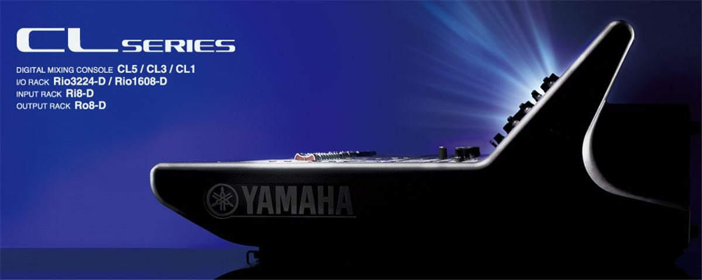

<!DOCTYPE html>
<html lang="en">
<head>
    <meta charset="UTF-8">
    <title>Product</title>
    <link rel="stylesheet" href="styles/style.css">
    <meta name="viewport" content="width=device-width, initial-scale=1">
    <script src="js/enhancement.js"></script>
<!--    <script src="js/product.js"></script>-->
</head>
<body>
<header>
    <nav class="navbar">
        <a href="images/weblogo.png" class="logo">
            
        </a>
        <div class="menu" id="menu">

        </div>
        <div class="burger">
            <div class="line"></div>
            <div class="line"></div>
            <div class="line"></div>
        </div>
    </nav>
</header>


<hr class="divider">

<!--<div id="pr-div-02" class="product-section">-->
<!--    <h2 class="pr-h2">QL5 <small style="color: darkgray; font-size: 15px">Digital Mixing Console</small></h2>-->
<!--    <div class="pr-image">-->
<!--        -->
<!--    </div>-->
<!--    <aside class="pr-details">-->
<!--        <ol>-->
<!--            <li>Mix channels: 64 mono, 8 stereo.</li>-->
<!--            <li>Busses: 16 mix, 8 matrix (Input to Matrix supported).</li>-->
<!--            <li>Local I/O: 32 in, 16 out.</li>-->
<!--            <li>Fader configuration: 32 + 2 (Master).</li>-->
<!--            <li>Stainless steel iPad support stays.</li>-->
<!--        </ol>-->
<!--        <input type="button" value="Product Registration" class="pr-button">-->
<!--    </aside>-->
<!--</div>-->

<hr class="divider">

<!--<div class="content-section">-->
<!--    <aside class="pre-third-aside">-->
<!--        <h1>DO MORE</h1>-->
<!--        <p>-->
<!--            The word “compact” is often associated with limitations, and in the sound reinforcement world, often implies-->
<!--            compromises in functionality, connectivity, or sound quality, and sometimes all three. Until now choosing a-->
<!--            compact console has almost invariably been a matter of what you’re willing to sacrifice to get the-->
<!--            capabilities you need in the space you have. The new DM3 series of mixing consoles shatters this stereotype,-->
<!--            offering superb sound quality, fast and easy setup and operation, and professional-level features for live-->
<!--            sound, streaming, and live or home recording and music production—a combination unmatched in any other mixing-->
<!--            console this size. In an ever-changing world that constantly presents new challenges as well as-->
<!--            opportunities, DM3 mixing consoles give you the power and flexibility to do more than you ever imagined with-->
<!--            a compact digital console.-->
<!--        </p>-->
<!--    </aside>-->

<!--    <div id="if-youtube">-->
<!--        <iframe class="pr-iframe"-->
<!--                src="https://www.youtube.com/embed/ulHZ1RZxODM?list=PL3rjqgoqj7LJ6jlD5MB7nwP5tZL9VWtjb"-->
<!--                title="Yamaha RIVAGE PM Series: Perfecting the Art of Live Sound"-->
<!--                allowfullscreen></iframe>-->
<!--    </div>-->

<!--    <h2 class="details-heading">DETAILED INFORMATION</h2>-->

<!--    <section class="pro-section">-->
<!--        <table>-->
<!--            <thead>-->
<!--            <tr>-->
<!--                <th>Input mixing channels</th>-->
<!--                <th>Busses</th>-->
<!--                <th>Local I/O</th>-->
<!--                <th>USB</th>-->
<!--                <th>Sampling rate</th>-->
<!--            </tr>-->
<!--            </thead>-->
<!--            <tbody>-->
<!--            <tr>-->
<!--                <td>16 mono + 1 stereo + 2 FX return</td>-->
<!--                <td>1 Stereo, 6 Mix, 2 FX, 2 Matrix (Supports Input to Matrix)</td>-->
<!--                <td>16 Mic/Line (12 XLR + 4 XLR/TRS Phones Combo) inputs, and 8 (XLR) outputs</td>-->
<!--                <td>18 inputs, and 18 outputs</td>-->
<!--                <td>48kHz/96kHz</td>-->
<!--            </tr>-->
<!--            </tbody>-->
<!--        </table>-->
<!--    </section>-->

<!--    <object type="text/x-scriptlet" data="footer.html" class="footer" width=100% height=110></object>-->
<!--</div>-->

</body>
</html>
